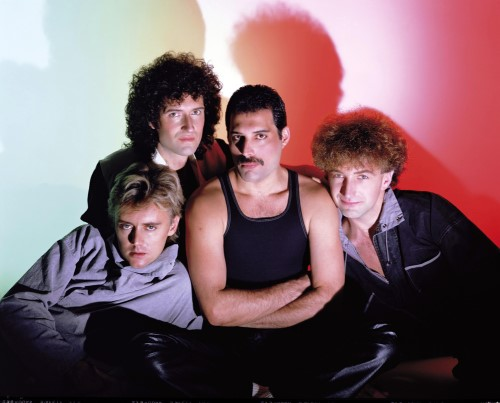
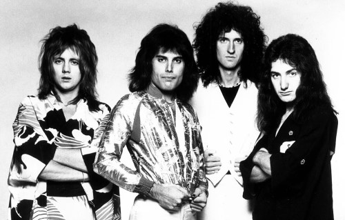
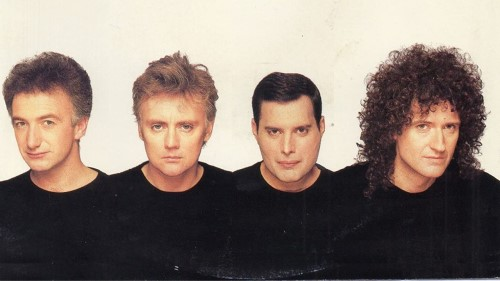
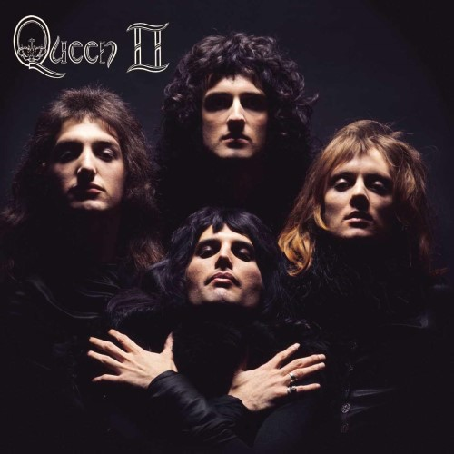

O início da banda remonta a 1967, quando Brian May, Tim Staffell e Roger Taylor formaram o trio Smile, no Imperial College em Londres, onde todos estudavam. Após a saída do baixista e vocalista do grupo, Tim Staffell, na Primavera de 1970, May e Taylor foram apresentados por Staffell a Farrokh Bulsara em Abril do mesmo ano, o qual viria a ser o vocalista da nova banda com o nome artàstico Freddie Mercury, batizando a banda com o nome Queen. Em 1971, John Deacon completou a formação dos Queen como baixista.
|  |  |  |  |